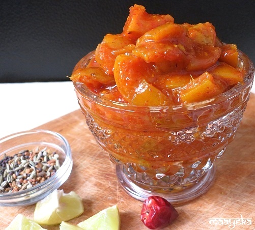

Ingredients:
1)1/2 kg Lemons (Nimbu)
2)1 kg Sugar (Cheeni)
3)1 1/2 cups Water
4)3 tablespoons Salt (Namak)
5)2 teaspoons Red chili pepper (Lal Mirchi)
6)4 Cloves (Lavang)
7)1 inch Cinnamon (Dalchini)
How to make sweet and sour lemon pickle:
1)Peel the lemons, dice and remove their seeds.
2)Sprinkle salt over the pieces.
3)Make a half-thread consistency syrup sugar with water, mix lemon pieces, Red chili pepper, cinnamon and cloves and cook till it boils.
4)Put in a jar, keep it aside for one week before using.